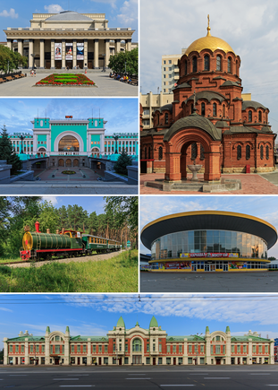

Moscova
este capitala Rusiei, un oraș cu 9,6 milioane locuitori, aflat pe râul Moscova, și cu o suprafață de 878,7 km². Este orașul cu cea mai numeroasă populație din Rusia și cel mai populat subiect federal al Rusiei. Este un centru politic major, economic, cultural, științific, religios, financiar
Sankt Petersburg
este un oraș din Rusia. Se află în Rusia de nord-vest, în delta râului Neva, în partea de est a golfului Finic al Mării Baltice.
Novosibirsk este cel mai mare oraș din Siberia, Rusia cu 1,4 milioane locuitori și capitala regiunii Novosibirsk.
Ekaterinburg este un oraș major din partea centrală a Rusiei. Orașul este așezat pe partea estică a Munților Ural și este capitala regiunii Sverdlovsk. El este centrul industrial și cultural al Districtului Federal din Ural.